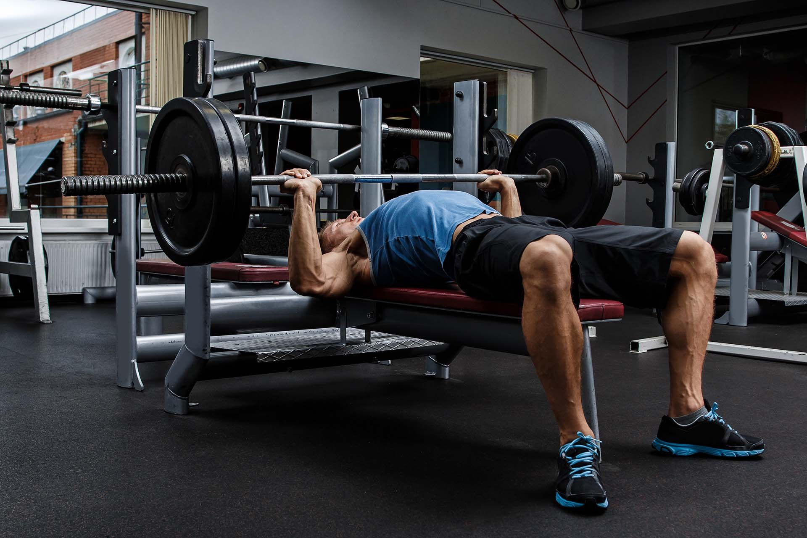

<!--<mat-sidenav-container class="sidenav-container">
  <mat-sidenav style="background-color:rgb(188, 243, 229)"  #drawer class="sidenav" fixedInViewport
      [attr.role]="(isHandset$ | async) ? 'dialog' : 'navigation'"
      [mode]="(isHandset$ | async) ? 'over' : 'side'"
      [opened]="(isHandset$ | async) === false">
    <mat-toolbar>Menu</mat-toolbar>
    <mat-nav-list >
      <a style="color:black;font-weight:500;" mat-list-item routerLink="/addtaskstudio">Add  Task</a>
      <a style="color:black;font-weight: 500;" mat-list-item routerLink="/gettaskstudio">Your tasks</a>
    </mat-nav-list>
  </mat-sidenav>
  <mat-sidenav-content>
    <mat-toolbar color="whitesmoke">
      <button
        type="button"
        aria-label="Toggle sidenav"
        mat-icon-button
        (click)="drawer.toggle()"
        *ngIf="isHandset$ | async">
        <mat-icon aria-label="Side nav toggle icon">menu</mat-icon>
      </button>
      
      <span style="font-size: 20px; letter-spacing: .2rem; font-family: 'Lucida Sans', 'Lucida Sans Regular', 'Lucida Grande', 'Lucida Sans Unicode', Geneva, Verdana, sans-serif;
      color:orangered">TODO-LIST</span>
     

      <button  mat-icon-button type="button" style="margin-left:700px;" class="box" matBadge='{{noOfIncomplete}}'  (click)="isBadgeHidden " (click)="openModal()"  >
        <mat-icon>notifications</mat-icon>
        <button mat-raised-button color="accent"routerLink="/userdetails" style="margin: 2rem; margin-left:20px; background-color: rgb(19, 21, 21);">My Profile</button>

        <button mat-raised-button color="accent"routerLink="/login" style="margin: 2rem; margin-left:20px; background-color: rgb(19, 21, 21);">Logout</button>
    </button>
    </mat-toolbar>
    <router-outlet></router-outlet>
    <div class="container">
      <div class="row">
      <h1 style="font-size:50px;">Eliminate manual tasks </h1>
      <h3 style="margin-top:15px;">Automate routine tasks so you can focus on the work that matters. Prioritize tasks, set due dates and check statuses with a glance.</h3>
      
       </div> 
    </div>
    <div class="pic">
      <div id="carouselExampleSlidesOnly" class="carousel slide" data-bs-ride="carousel">
        <div class="carousel-inner">
          <div class="carousel-item active">
            
          </div>
          <div class="carousel-item">
            
          </div>
          <div class="carousel-item">
            
          </div>
        </div>
      </div>
      </div>
          
  </mat-sidenav-content>
</mat-sidenav-container> -->

<!-- <div>
<nav class="w3-sidebar w3-bar-block w3-card w3-top w3-xlarge w3-animate-left" style="display:none;z-index:2;width:40%;min-width:300px" id="mySidebar">
  <a href="javascript:void(0)" onclick="w3_close()"
  class="w3-bar-item w3-button">Close Menu</a>
  <a href="/addtaskstudio" onclick="w3_close()" class="w3-bar-item w3-button">Add Task</a>
  <a href="/gettaskstudio" onclick="w3_close()" class="w3-bar-item w3-button">My Tasks</a>
  <a href="userdetails" onclick="w3_close()" class="w3-bar-item w3-button">My Profile</a>
  <a href="/login" onclick="w3_close()" class="w3-bar-item w3-button">Logout</a>


</nav>

<div class="w3-top">
  <div class="w3-white w3-xlarge" style="max-width:100%;margin:auto">
    <div class="w3-button w3-padding-16 w3-left" onclick="w3_open()">☰</div>
    <div class="w3-right w3-padding-16"></div>
    <div class="w3-center w3-padding-16 "> To-Do List</div>
  </div>
</div>
  
<div class="container">
<div class="w3-content" style="max-width:100%">

  <div class="w3-opacity">
  <span class="w3-button w3-xxlarge w3-white w3-right" onclick="w3_open()"><i class="fa fa-bars"></i></span> 
  <div class="w3-clear"></div>
  <header class="w3-center w3-margin-bottom">
    <h1><b>Don't Miss Any Task!!!</b></h1>
    <p><b>Automate routine tasks so you can focus on the work that matters. Prioritize tasks, set due dates and check statuses with a glance.</b></p>
    <p class="w3-padding-16"><button class="w3-button w3-black" routerLink="/addtaskstudio">Add Your Task Now</button></p>
  </header>
  </div>


  
  <div class="w3-row" id="myGrid" style="margin-bottom:128px">
    <div class="w3-third">
      
      
      
      
      
      
    </div>
  
    <div class="w3-third">
      
      
      
      
      
      
    </div>
  
    <div class="w3-third">
      
      
      
      
      
      
    </div>
  </div>
  
</div>
<footer class="w3-container w3-padding-64 w3-center w3-opacity w3-light-grey w3-xlarge">
  <i class="fa fa-facebook-official w3-hover-opacity"></i>
  <i class="fa fa-instagram w3-hover-opacity"></i>
  <i class="fa fa-snapchat w3-hover-opacity"></i>
  <i class="fa fa-pinterest-p w3-hover-opacity"></i>
  <i class="fa fa-twitter w3-hover-opacity"></i>
  <i class="fa fa-linkedin w3-hover-opacity"></i>
  <p class="w3-medium">Powered by <a href="https://www.w3schools.com/w3css/default.asp" target="_blank">To-List App</a></p>
</footer> -->


